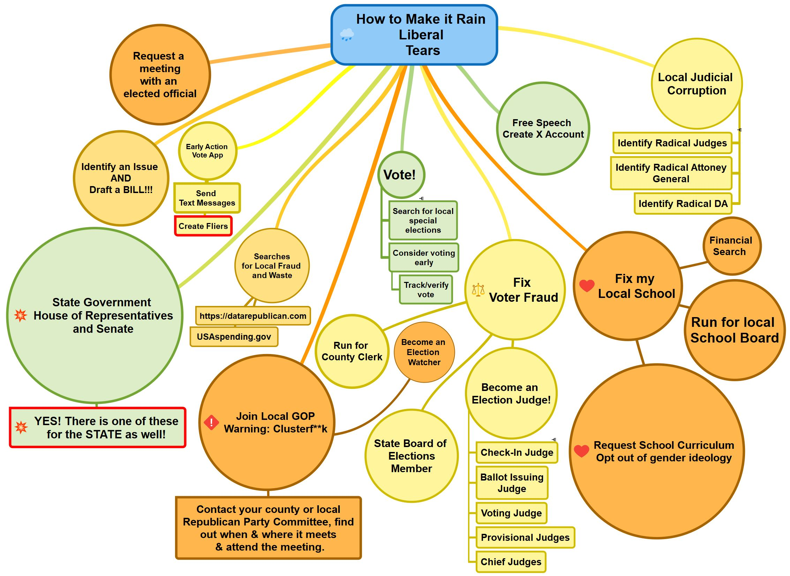
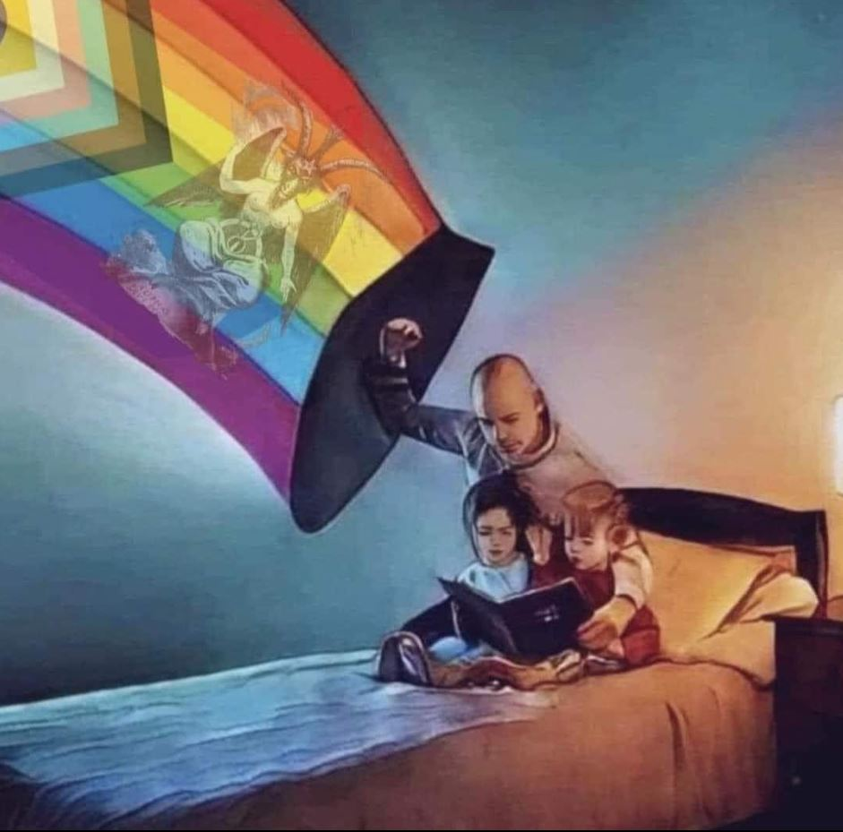
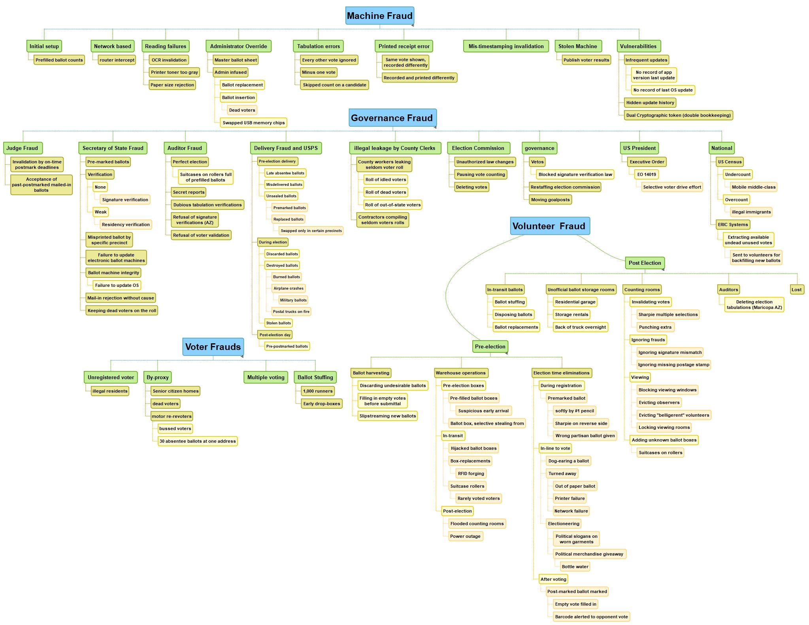
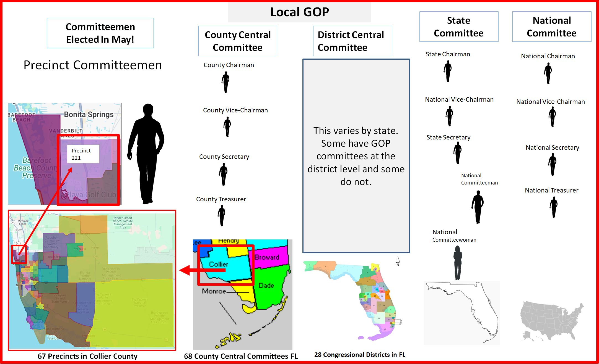

Fix My Local School

✅Submit Opt-Out forms and Freedom of Information Act (FOIA) request!
| Source | Document | |
|---|---|---|
| Courage is a Habit | Four Opt-Out Forms | |
| Advocate for Education | Freedom of Information Act Template |
⚠️Be aware of federal and state teachers unions
- Advocate for transparency in school budgets and spending.
Fix Voter Fraud

Judicial System
Learn about engaging with the judicial system.
Join Local GOP

State Government House and Senate
Understand your state’s legislative process.
Early Action Vote App
Details on using apps for early voting.
Search for Local Fraud and Waste
Tools to identify local government inefficiencies.
Vote
Guides on voting and voter registration.
Draft a Bill
Steps to propose new legislation.
Copyright © 2025 - All Rights Reserved. How to Make Liberal Tears.